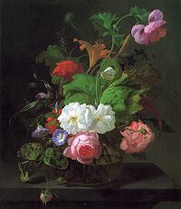
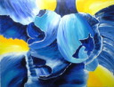

zichi Lorentz

Zichi Lorentz.
Visual Artist.Commentator-Publisher.
Liverpool UK (1952-1971).
London UK (1971-1994).
Japan (1994-).
Present location:Tatsuno City. Hyogo.
pdf Library for my Paintings and Exhibitions

Flower Painting Notes
Some info on that
{kind=link}
{kind=link}
Saburo Kuki (九鬼三郎)
A good friend
A prominent contemporary Japanese Yōga (Western-style) painter best known for his highly realistic, serene oil paintings that capture the harmonious beauty of "ancient pottery and seasonal flowers" (古陶と花) Saburo Kuki (九鬼三郎)website
I enjoy painting flowers. Why? I think it is because of the wonderful variety of colors and shapes that flowers offer. Yet painting flowers is not as easy as it might first appear. No two flowers are identical. When you look closely, each flower reveals its own character and is unique in some way.
The life cycle of a flower is short. In this sense, the uniqueness and brevity of a flower’s life can be seen as a reflection of our own lives. Flowers are, in many ways, among nature’s jewels.

Rachel Ruysch
There is a long and distinguished history of flower painting in both the East and the West. Some of the finest examples came from Dutch artists of the seventeenth and eighteenth centuries, including Rachel Ruysch (1664–1750).
Ruysch was a woman of extraordinary artistic talent who became one of the most celebrated flower painters of her time. Remarkably, she also gave birth to ten children while maintaining her artistic career. The painting on the left is by Rachel Ruysch.
When painting flowers, an artist must decide whether to pursue a more botanical approach or a more abstract one.
Before the invention of photography, botanical painting was particularly important. Many exceptional botanical artists devoted enormous amounts of time to studying and painting individual plants and flowers with extraordinary accuracy. Some artists could spend months, or even years, on a single work.
This tradition continues today. One excellent introduction to contemporary botanical painting is *Contemporary Botanical Artists: The Shirley Sherwood Collection* by Dr. Shirley Sherwood, published by Weidenfeld and Nicolson in 1996. Dr. Sherwood has assembled an impressive collection of contemporary botanical art.
I also enjoy a more abstract approach to flowers, particularly the work of Georgia O’Keeffe. She was not only an outstanding artist but also a remarkable woman who lived to the age of 98 and continued to create art well into old age. Her highly enlarged and simplified flowers transformed the way many people looked at familiar subjects.
The painting that follows, "Portrait of an Iris", was inspired by the work of Georgia O’Keeffe.
{kind=link}

Flowers I Paint
I enjoy painting many different kinds of flowers—roses, camellias, lotuses and others. I particularly enjoy Japanese camellias because there are so many varieties, each with its own character.
I am not a botanical artist. I simply do not have the time—or the patience—to pursue that level of scientific accuracy. Nevertheless, the two paintings at the beginning of this post are attempts to portray flowers as accurately as I could. Although they are relatively small works, each took several days to complete.
Japanese Flower Painting
In Japan, flower painting developed along a somewhat different path from that of the West. One reason may be Japan’s long period of relative isolation from the outside world during the Edo period. Japanese artists developed traditions in which capturing the essence, character, or spirit of a flower could be more important than achieving absolute botanical accuracy.
Flowers also occupy an important place in Japanese culture. Individual flowers often carry particular meanings and associations. Perhaps the most famous example is the chrysanthemum, which has a profound connection with the Japanese imperial family and the Chrysanthemum Throne.
One of my favorite Japanese flower painters is Chinami Nakajima.
Chinami Nakajima
Chinami Nakajima was born in 1945 in Obuse, Nagano Prefecture, as the third son of the Nihonga painter Kiyoshi Nakajima. His family had evacuated to Obuse during the Second World War. He graduated from the Nihonga Department of Tokyo National University of Fine Arts and Music and completed his graduate studies there in 1971.
In 1979, he received the Yamadane Art Gallery Exhibition Award for Excellence. He went on to become one of the finest contemporary Nihonga painters, known for his remarkable range.
His work includes fresh and vibrant depictions of flowers such as cherry blossoms and peonies, as well as large-format portraits containing social and religious themes. He has also created book covers and illustrations.
Nakajima donated approximately 700 works to the town of Obuse, which subsequently opened the Obuse Museum and Nakajima Chinami Gallery in 1992. In 2000, he began teaching in the Design Department of the School of Fine Arts at Tokyo National University of Fine Arts and Music.
When I lived in the Japan Alps from 1994 to 2002, I was fortunate enough to visit the Obuse Museum and to meet Nakajima several times. These encounters remain among my most memorable experiences connected with Japanese art.
Obuse and Hokusai
Obuse is the smallest municipality in Nagano Prefecture, yet it possesses an extraordinary wealth of history and culture.
It is also closely associated with Katsushika Hokusai, one of the greatest masters of ukiyo-e. Hokusai developed a deep affection for Obuse and spent part of his later life there, producing some remarkable works.
Among the treasures associated with Hokusai in Obuse are the enormous ceiling painting "Happō Nirami no Hōō-zu" at Ganshō-in Temple, as well as original paintings and manuscripts displayed at the Hokusai Museum.
For me, Obuse represents a fascinating meeting point between nature, flowers, Japanese painting, and the broader history of Japanese art. It is a place where the beauty of the natural world and the artistic traditions of Japan seem to come together.